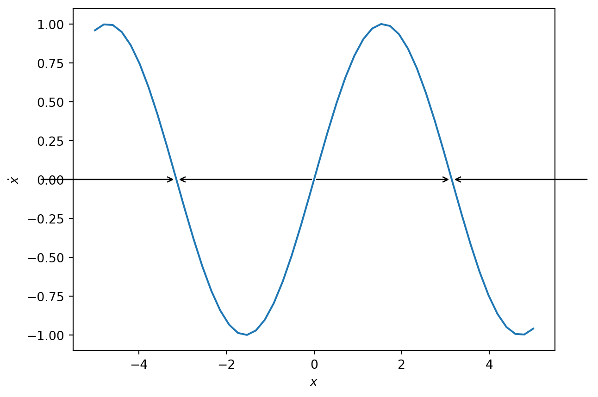
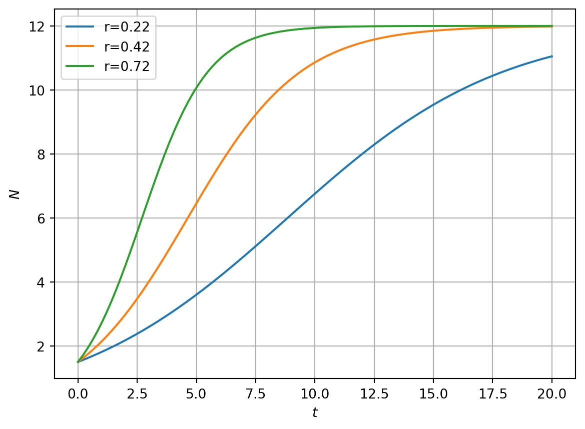

2 Flows on the line
Here we consider ODE models with a single dependent variable that are first order in time.
Let \(x=x(t)\) and consider the ODE \[ \dot{x}=f(x). \tag{2.1}\]
It is assumed that \(f\) is smooth and real valued.
2.1 Geometric
For many problems an explicit solution can either not be constructed or is not of practical use.
Example 2.1 Let \(x(t)\). Consider the ODE \[ \dot{x}=\sin x. \]
For the initial condition \(x(0)=\pi/4\), describe solution behaviour as \(t\rightarrow \infty\).
After applying separation of variables, an implicit solution is given by
\[ t=-\ln |\csc x + \cot x| + C, \] where \(C\) is an integration constant.
However, this does not help me to describe the limiting behaviour of the solution as \(t\rightarrow \infty\).
Instead let’s use a graphical method. In Figure 2.1 we sketch a graph of \(f\), the right-hand side of the ODE. The arrows depict the vector field. Hence when \(f>0\), \(\dot{x}>0\) and the solution increases. In contrast, when \(f<0\), \(\dot{x}<0\) and the solution decreases.
Note that \(f>0 \ \forall \ 0<x<\pi\). Hence for the initial condition \(x_0=\pi/4\), \(\dot{x}_{t=0}>0\). The solution will increase until it reaches \(\pi\). At \(x=\pi\), \(f=0\).
Code
import matplotlib.pyplot as plt
import numpy as np
x=np.linspace(-5,5)
y=np.sin(x)
fig,ax=plt.subplots()
ax.plot(x,y)
ax.set_xlabel('$x$')
ax.set_ylabel('$\dot{x}$')
# Arrow target (arrow head)
x=[np.pi, np.pi, -np.pi, -np.pi]
y=[0.0, 0.0,0.0,0.0]
# Arrow start
x0=[0.0,2.0*np.pi,0.0,-2.0*np.pi]
y0 = [0.0,0.0,0.0,0.0]
for x_i,y_i,x0_i,y0_i in zip(x,y,x0,y0):
ax.annotate('',
xy=(x_i, y_i), # arrow head
xytext=(x0_i, y0_i), # arrow tail
arrowprops=dict(
arrowstyle='->',
color='black'
),
ha='center'
)
plt.show()2.2 Fixed points and linear stability
2.2.1 Fixed points
Let \(x=x^*\) be a fixed point of Equation 2.1. At \(x=x^*\) \[ \dot{x}=0 \implies f(x^*)=0. \]
There are a number of interpretations of \(x^*\):
- roots of \(f\) (algebraic)
- stagnation points of the flow (topological)
Corollary 1
Any trajectory initialised at a fixed point remains there for all \(t\).
Example 2.2 Find all the fixed points of \[ \dot{x}=x^2-1, \tag{2.2}\]
Code
import numpy as np
x=np.linspace(-2,2)
y=x**2-1
fig,ax=plt.subplots()
ax.plot(x,y)
ax.set_xlabel('$x$')
ax.set_ylabel('$f$')
ax.grid(True)
ax.set_ylim([-2,3])
# Arrow target (arrow head)
x=[-1.0, -1.0, 2.0]
y=[0.0, 0.0,0.0]
# Arrow start
x0=[-2.0,1.0,1.0]
y0 = [0.0,0.0,0.0]
for x_i,y_i,x0_i,y0_i in zip(x,y,x0,y0):
ax.annotate('',
xy=(x_i, y_i), # arrow head
xytext=(x0_i, y0_i), # arrow tail
arrowprops=dict(
arrowstyle='->',
color='black'
),
ha='center'
)
plt.show()
2.2.2 Linear stability analysis
Let \(x=x^*\) be a fixed point of Equation 2.1.
2.2.2.1 A change of dependent variable
To perform a linear stability analysis we make the change of variables \[ x(t)=x^*+\hat{x}(t) \] where the new dependent variable, \(\hat{x}(t)\), is a perturbation about the fixed point.
The time derivative on the left-hand side of Equation 2.1 transforms to \[ \dot{x}= \frac{d }{dt} (x^*) + \frac{d }{dt}(\hat{x}(t))=\dot{\hat{x}}. \] Hence Equation 2.1 transforms to \[ \dot{\hat{x}} = f(x^*+\hat{x}(t)). \tag{2.3}\]
2.2.2.2 Taylor expansion and a linear system
Employing the Taylor expansion on the right-hand side of Equation 2.1 and making the assumption that perturbations are small \[
\dot{\hat{x}} = f(x^*)+ f'(x^*)\hat{x}(t) + f''(x^*)\hat{x}^2(t) + h.o.t.
\] Noting that
\[
f(x^*)=0
\] and retaining linear terms yields \[
\dot{\hat{x}} = f'(x^*)\hat{x}(t)
\] with solution \[
\hat{x}(t)= \eta e^{f'(x^*) t}.
\] Here \(\eta\) is an initial perturbation about the steady-state that is determined by initial conditions.
2.2.2.3 A condition for linear stability
When \(f'(x^*)>0\) the perturbation grows exponentially fast and the steady-state is linearly unstable. When \(f'(x^*)<0\) the perturbation decays exponentially fast and the steady-state is linearly stable.
Example 2.3 Determine the linear stability of the fixed points of \[ \dot{x}=x^2-1. \]
Example 2.4 What can be said about the stability of the fixed points of the following ODEs:
\[ \dot{x}=-x^3. \]
\[ \dot{x}=x^3. \]
\[ \dot{x}=0. \]
2.3 Validity of linear classification
It is worth highlighting here that
\[ f'(x*) \] can be interpreted as an eigenvalue of the linearised problem \[ \dot{\hat{x}}=\lambda \hat{x}, \] where \[ \lambda = f'(x^*). \]
Definition 2
A fixed point is said to be hyperbolic when the eigenvalues of its linearisation are nonzero.
Theorem 3: Hartman-Grobman
If a system has a hyperbolic FP, the classification of the nonlinear system at the fixed point is determined by the linear classification.
If a fixed point is non-hypberbolic, it’s classification requires consideration of higher order terms.
Example 2.5 Apply the Hartman Grobman theorem to the classification of the problem
\[ \dot{x}=-x^3. \]
2.4 Case study: population dynamics
Let \(N=N(t)\). The logistic model of population growth, due to Verhulst, takes the form \[ \dot{N}=rN(t)\left (1-\frac{N(t)}{K}\right), \tag{2.4}\]
where \(r\) is the linear growth rate and \(K\) is carrying capacity. We consider both \(r,K\in \Re^+\).
Questions to ask of such a model are: what type of biologically realistic solutions does it possess? Are there fixed points? If so, are they stable or unstable?
2.4.0.1 Numerical solutions
In Figure 2.3 we present numerical solutions of equation using different initial conditions. Note the limiting behaviour of solutions as \(t\rightarrow \infty\). In Figure 2.3 it is clear that even though some solutions are initialised at \(N_0=0.1\), much closer to \(N^*=0\) than \(N^*=K\), they tend to the limit \(N=K\). Why do solutions not tend to \(N^*=0\)?
Code
import numpy as np
import matplotlib.pyplot as plt
import scipy
from scipy.integrate import odeint
# This codes computes a numerical solution of the logistic growth model
# Define model parameters
K=12
r_1=0.22
r_2=0.42
r_3=0.72
# Plotting parameter
N_max=1.1
# Initial condition
n_0=1.5
# Max time
T=20
t=np.linspace(0,T,100)
def rhslogistic_model(x,t,r,K):
rhs=r*x*(1-x/K)
return rhs
# Numerically solve the ODE for different parameter values
sol1=odeint(rhslogistic_model,n_0,t,args=(r_1,K))
sol2=odeint(rhslogistic_model,n_0,t,args=(r_2,K))
sol3=odeint(rhslogistic_model,n_0,t,args=(r_3,K))
# Plot solutions
fig, ax = plt.subplots(1)
ax.plot(t, sol1,t, sol2,t, sol3)
plt.xlabel('$t$')
plt.ylabel('$N$')
plt.grid(True)
plt.legend(['r='+str(r_1),'r='+str(r_2),'r='+str(r_3)])
plt.show()

2.4.0.2 Dimensional analysis and nondimensionalisation
\(N\) represents the population density and has units of one over area (say \(1/m^2\)) and \(t\) has units of time (say, seconds, \(s\)). Hence the left-hand side of Equation 2.4 has units of \(1/(m^2 s)\). The first term on the right-hand side of Equation 2.4 is \(rN\). \(N\) has units \(1/m^2\) hence the parameter \(r\) must have units of \(1/s\) for dimensional consistency. This is consistent as \(r\) represents the linear growth rate.
The second term has the form \(rN^2/K\). Given the chosen units for \(r\) and \(N\), the parameter \(K\) must have dimensions \(1/m^2\). Again, this is consistent as \(K\) is a carrying capacity (i.e. it has units of population density).
We define the nondimensionalised variables \[ n=\frac{N}{\tilde{N}} \ \ \ \ \ \ \tau=\frac{t}{\tilde{T}} \] where \(\tilde{N}\) and \(\tilde{T}\) are constants that have units of population density and time, respectively. Hence Equation 2.4 transforms, upon change of variables, to \[ \begin{aligned} \frac{\tilde{N}}{\tilde{T} }\frac{dn}{d\tau}=r\tilde{N}n(1-\frac{n\tilde{N}}{K}). \end{aligned} \]
In the case of the logistic equation there is only one time scale and density scale in the problem, hence we choose \[ \tilde{T}=\frac{1}{r} \ \ \ and \ \ \ \tilde{N}=K \] and the dimensionless model is \[ \begin{aligned} \frac{dn}{d\tau}= n(1-n) \end{aligned} \tag{2.5}\] Note that we can retrieve the original equation by rescaling and calculating \(N=\tilde{N}n\) and \(t=\tilde{T}\tau\).
2.4.1 Fixed points and linear stability
Fixed points satisfy \[ n^*(1-n^*)=0. \] Hence \[ n^*=0, \ \ \ \ n^*=1. \]
To determine linear stability we compute \[ H'(n)= (1-2n). \] When \(n=n^*=0\) we obtain \[ H'(n)= 1. \] Hence the origin is a linearly unstable fixed point.
At the steady-state \(n^*=1\) \[ H'(n^*)= -1 \] hence \(n^*=1\) is linearly stable.
Note that the linear stability analysis can explain the observations regarding the numeric solutions presented in Figure 2.3.
2.4.2 Graphical analysis
In Figure 2.4 we plot the right-hand side of Equation 2.5. We can qualitatively describe model solutions by considering the arrow along the \(n\) axis. Suppose we consider an initial condition with \(0<n_0<1\). Using the graph of \(H(n)\), \(dn/d\tau\) is positive, hence \(n\) increases as a function of time until \(n(\tau)\rightarrow 1\).
Code
import numpy as np
import matplotlib.pyplot as plt
N_max=2.1
K=2
r=0.2
N_vec=np.linspace(0,N_max,100)
rhs=r*N_vec*(1-N_vec/K)
fig, ax = plt.subplots(1)
ax.plot(N_vec, rhs)
plt.xlabel('$N$')
plt.ylabel('$H(N)$')
plt.show()
Example 2.6 Use separation of variables to show that the solution can be written explicitly as \[ N(t)=\frac{N_0K e^{rt}}{K+N_0(e^{rt}-1)} \]
2.4.2.1 Qualitative analysis of the exact solution
As \(t\rightarrow \infty\), \(N\rightarrow K\). At \(t=0\), \(N=N_0\) and that for small \(N_0\ll K\) the initial growth phase is exponential, i.e. \[ N(t)\sim N_0 e^{rt} \\ \ \ \ \ N_0\ll K, t\ll \frac{1}{r}. \]
2.5 Impossibility of oscillations
In 1D flows with well behaved \(f\), the range of permissible qualitiative behaviours is limited by the geometry of the line. Solutions must have one of the following behaviours:
- tend towards a stable fixed point
- move away from an unstable fixed point
- stay at a fixed point for all time
- tend to \(\pm \infty\)
Oscillatory solutions to Equation 1.5 are impossible, i.e. first order autonomous ODEs (with one dependent variable) cannot oscillate.
This can be argued using geometrical constraints of dynamics on the line.
Example 2.7 Consider the integral \[ \int_t^{t+T} f(x(t))\frac{dx}{dt}dt, \] where \(T\) is the oscillation period. Use proof by contradiction to show that periodic solutions are impossible.
2.6 Potential flows
Consider the ODE \[ \dot{x}=f(x). \]
Suppose that \[ f(x)=-\frac{d V(x)}{dx}. \]
Now consider \[ \dot{V}. \] Applying the chain rule \[ \dot{V}=\frac{dV}{dx}\dot{x}=-(\frac{dV}{dx})^2\leq 0. \]
Hence for a potential flow \(V\) is never increasing. Hence particle move to points of lower potential until they reach equilibrium given by \[ f(x)=-\frac{d V(x)}{dx}=0. \]
Example 2.8 Graph the potential for the system \[ \dot{x}=-x \] and identify equilibrium points.